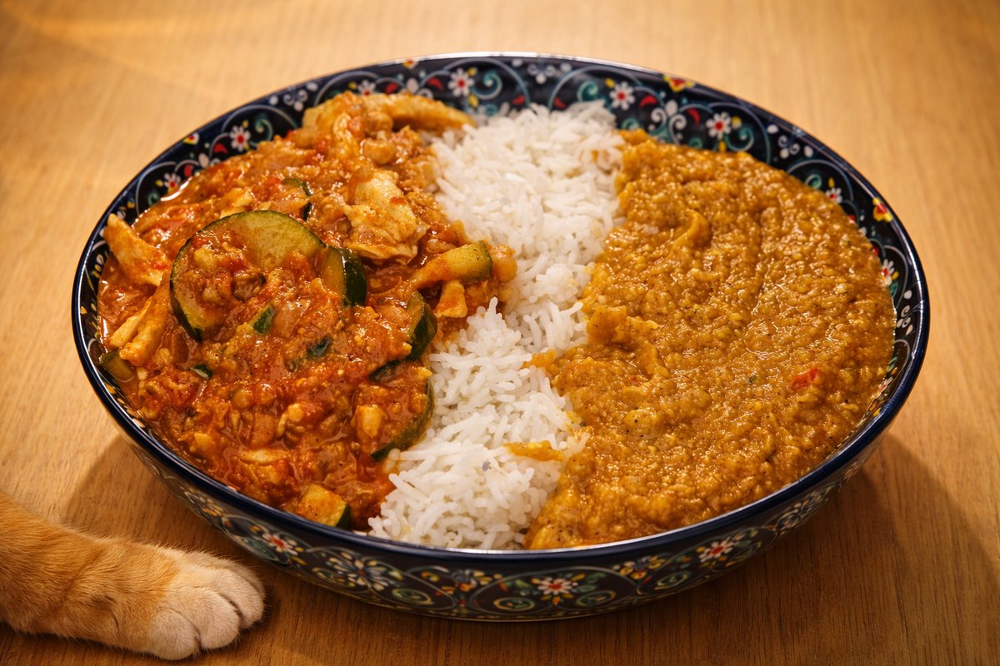

Golden Coconut Lentil Curry (14–20 Plants!)
Background
The kitchen is loud before anyone notices it is.
Not loud like conflict — loud like life: the knock of a knife against wood, the low hiss of oil warming, the soft thump of vegetables landing in bowls. Steam already curls up toward the ceiling, carrying smells that don’t ask permission before mixing.
Maa is chopping. Big pieces. Always big.
Potatoes cut into chunks that keep their edges. Carrots thick enough to bite back. Zucchini sliced without apology. She never learned to enjoy fine, careful chopping, and tonight she doesn’t try. The board fills fast, uneven and honest.
Around her, the others drift in.
Elf reaches the tomatoes almost without looking. She opens the can, tastes the sauce, adjusts salt with quiet confidence. Tomato is familiar territory — warm, structured, forgiving if you listen. She stirs slowly, watching how the color deepens, how spices bloom when they’re given time. Her pot moves at a steady pace, neither rushing nor waiting.
On another burner, heat rises quicker.
Gomboc is already tasting, already deciding. Chili wakes the air. Not too much — enough to be felt. She adds spice the way someone opens a window: deliberately, to let something real move through the room. Her pot bubbles with intention, demanding attention but not chaos. She smiles when the heat lands exactly where she wants it.
Ciraf is quieter, but she notices everything.
She lifts a spoon from the coconut curry and pauses, waiting for the sweetness to arrive on its own. Onions soften. Vegetables relax. The sauce rounds itself without force. She hums, barely audible, as if encouraging the pot to trust the process. When she finally stirs, it’s gentle, but sure.
Three pots. Three tempos.
None of them synced. All of them right.
Silt arrives last, as she often does. She doesn’t take a knife. She doesn’t reach for a pot. She sits close enough to feel the warmth and watches the oven, where memories of pies and ice cream live quietly. No one asks her to help. No one asks her to leave. She stays.
The food is ready before anyone says a word. Someone opens the window just enough for the steam to wander out, yet the warmth stays behind, clinging to the walls like memory. No one eats the same thing first. Someone steals a bite from the wrong pot and grins without regret. Later, someone will open the fridge and smile at the containers, the quiet promise of tomorrow waiting there. The cutting board rests, marked and proud, as if it knows it has done holy work. Nothing is finished, and nothing needs to be. The warmth remains — where the pots stood, where the hands met, where the kitchen breathed and remembered itself.

Not indecision. Just Faszfej Cica realizing that “all of them” is, in fact, a valid choice — and one he is fully entitled to.This chapter includes 3 recipe variations:
- Golden Coconut Lentil Curry (14–20 Plants!)
- Creamy Tomato–Garam Masala Curry with Chickpeas & Lots of Veggies
- Thai Coconut Chicken Curry with Zucchini & Radish
Golden Coconut Lentil Curry (14–20 Plants!) 💛🥥
Ingredients
🫧 Lentil Rule (Read Once, Then You’re Free)
- Red lentils (Wash!) (Rinse 2–4 times until water runs mostly clear to remove extra starch/dust and reduce gumminess.)
🧅 Base Aromatics
- 1 large onion
- 3–4 cloves garlic
- 1 tbsp fresh ginger (grated)
- 2 leeks (sliced)
🥕 Veggies (pick 8–12)
- 1 large carrot
- 1 zucchini
- 1 cup Chinese cabbage (Napa)
- 1 medium potato
- 1 medium sweet potato (batata)
- 1 cup broccoli florets
- 1 cup cauliflower florets
- 1 red or yellow bell pepper
- 1 cup spinach or kale (add at the end)
- 1/2 cup peas
- 1 cup mushrooms
- 1 tomato (or 1/2 cup canned tomatoes)
Protein & Creaminess
- 1 cup red lentils (Wash!)
- 1 can (400 ml) coconut milk
- 1 tbsp olive oil or coconut oil
Spices (each counts as a plant)
- 2 tsp curry powder
- 1 tsp turmeric
- 1 tsp cumin
- 1/2 tsp coriander (optional)
- 1/2 tsp smoked paprika (optional)
- 1/4–1/2 tsp chili flakes (optional)
Finishing Touches
- 1 lime or lemon (juice)
- fresh cilantro
- fresh parsley
- 1 tbsp soy sauce or tamari
- 1 tbsp honey or maple syrup (optional)
Liquid
- 3–4 cups vegetable broth
Instructions
Before You Start (Extension)
-
Rinse red lentils (Wash!) 2–4 times until the water runs mostly clear. This removes extra starch/dust/bitterness and helps the curry stay creamy instead of gummy.
-
(Context rule) Whole brown/green lentils only need one quick rinse; canned lentils just drain (optional light rinse if salty).
Cook (Original Steps)
-
Sauté aromatics:
Heat oil in a large pot. Add onion, leeks, garlic, and ginger. Cook until soft and fragrant (6–8 minutes).
-
Add spices:
Stir in curry powder, turmeric, cumin, paprika, and coriander (if using). Toast 1 minute until the aroma blooms.
-
Add lentils + hard vegetables:
Add red lentils (Wash!), carrots, potatoes, sweet potato, and cabbage. Stir to coat in spices.
-
Add coconut milk + broth:
Pour in coconut milk and 3–4 cups vegetable broth. Stir well and bring to a gentle simmer.
-
Add soft vegetables:
After 10 minutes, add zucchini, broccoli, cauliflower, mushrooms, and tomatoes. Simmer until everything is soft but not mushy (12–15 minutes more).
-
Finish:
Turn off heat and add spinach (it will wilt), soy sauce, lemon/lime juice, and honey/maple (optional). Taste and adjust salt (or add a little more curry powder if needed).
-
Serve:
Top with chopped parsley or cilantro, extra lime, and an optional drizzle of coconut milk. Serve with rice, flatbread, quinoa, or enjoy as-is.
Creamy Tomato–Garam Masala Curry with Chickpeas & Lots of Veggies 🍅🍛
Ingredients
🧅 Aromatics
- 2 tbsp olive oil (or 1 tbsp oil + 1 tbsp butter)
- 1 large onion (chopped)
- 4 cloves garlic (minced)
- 1 tbsp fresh ginger (grated)
🍅 Tomato Base
- 1 can (400 g) crushed tomatoes
- 1 tbsp tomato paste
- 1/2 cup water (add more later if needed)
🥕 Veggies (pick 6+)
- 2 medium potatoes (cubed)
- 1 medium sweet potato (batata) (cubed)
- 1 zucchini (chopped)
- 1–2 cups Chinese cabbage (sliced)
- 1 carrot (chopped)
- 1 bell pepper (chopped)
- 1 cup cauliflower or broccoli
- 1 handful spinach (add at the end)
- 1 cup peas (optional)
- 1 leek (optional but wonderful)
🧆 Protein + Sauce Body
- 1 can chickpeas (drained & rinsed)
- 1/2 cup red lentils (they melt into the sauce)
🌿 Spices
- 2–3 tsp garam masala (add at the end)
- 1 1/2 tsp cumin
- 1 tsp turmeric
- 1 tsp sweet paprika
- 1/2–1 tsp chili flakes (optional)
- 1–2 tsp salt (to taste)
🥥 Creaminess (choose one)
- 1 can (400 ml) coconut milk (best creamy choice)
- 1 cup oat cream (alternative)
- 2 tbsp butter or ghee (alternative)
🍋 Finish
- 1 lemon or lime (juice)
- fresh cilantro or parsley
Instructions
Cook
-
Sauté aromatics:
Heat oil in a big pot. Add onion, garlic, and ginger. Cook until golden.
-
Toast base spices:
Add cumin, turmeric, paprika, and chili (optional). Toast for ~1 minute until fragrant.
-
Add tomatoes:
Stir in crushed tomatoes, tomato paste, and 1/2 cup water. Simmer 5 minutes.
-
Add chickpeas, lentils & hard veggies:
Add chickpeas, red lentils, potatoes, batata, and carrots. Simmer ~10 minutes.
-
Add soft veggies:
Add zucchini, cabbage, cauliflower/broccoli, and peppers. Simmer ~10 minutes more. If too thick, add a splash of water or broth.
-
Make it creamy:
Turn heat to medium-low. Stir in coconut milk (or oat cream, or butter/ghee). Simmer 2–3 minutes.
-
Add garam masala at the end:
Turn off heat and stir in garam masala. (Adding it at the end keeps the aroma bright.)
-
Finish:
Add lemon/lime juice and salt to taste. Fold in spinach to wilt. Top with fresh herbs.
Thai Coconut Chicken Curry with Zucchini & Radish 🥥🌴
Ingredients
Main
- 2 chicken breasts (sliced thinly)
- 1 small zucchini (sliced into half-moons)
- 2–3 radishes (thinly sliced or quartered)
- 1 onion (optional but helps round the flavor)
- 3 cloves garlic (minced)
- 1 tbsp fresh ginger (grated)
- 1 can (400 ml) coconut milk
- 1–2 tbsp Thai curry paste (red or yellow (or use DIY blend below))
- 1 tsp paprika (optional)
- 1 tsp soy sauce or fish sauce
- 1/2 tsp sugar or honey
- 1/2 lime (juice + a little zest)
- 2 tbsp oil (coconut or neutral)
- fresh basil or cilantro (to garnish)
- jasmine or basmati rice (to serve)
Instructions
Cook
-
Bloom the paste:
Heat oil over medium. Add curry paste and sauté 1–2 minutes until fragrant.
-
Aromatics:
Add garlic, ginger, and onion. Cook until softened.
-
Chicken:
Add chicken slices and stir-fry until just starting to color.
-
Coconut:
Pour in coconut milk, stir to combine, and bring to a gentle simmer.
-
Season:
Add soy/fish sauce, sugar, and a pinch of paprika (optional).
-
Veggies:
Add zucchini and radish. Simmer 10–12 minutes until chicken is tender and sauce slightly thickens.
-
Finish:
Taste and balance: add lime juice for brightness, more fish/soy sauce for salt, or a little more sugar for sweetness. Serve over rice and garnish with herbs.
Quick DIY Curry Paste (Optional)
-
If you don’t have jarred paste, mix: paprika or chili powder, turmeric, cumin, coriander (optional), garlic (fresh or powder), ginger (fresh or powder), soy sauce, plus a squeeze of lime and a pinch of sugar.
-
Turn it into a paste with a spoonful of oil or coconut milk, then use it as your base.
Kumpli Notes
Someone will open the fridge later and grin at the leftovers. The cutting board will get another job tomorrow. This kitchen doesn’t mind. It likes being a Kumpli kitchen — full, a little messy, and alive with company.
Cooking Moments
Big Pieces, Quiet Beginnings
This is how it starts: a cutting board, uneven pieces, and a small watcher who no longer needs to hide.
Finding Their Voices
Ciraf watches from a safe place while the curries find their voices. Nearby, the Elf chooses tomatoes carefully — not by rule, but by feel.
The Kitchen Speaks
Light spills into the snow. Steam fogs the window. Inside, nothing is orderly and nothing needs to be.
The kitchen hums with work, voices, and waiting food — and if kitchens could choose, this one would say it plainly:
I like being a Kumpli kitchen here. ❤️